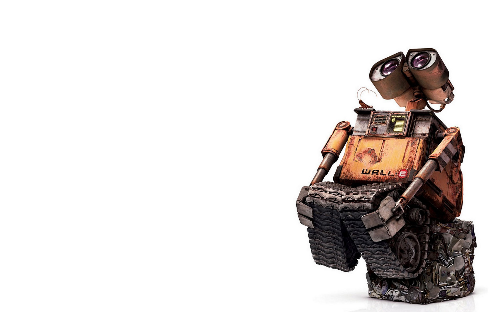

Amazing article
Anik kanti sikderA robot is a machine—especially one programmable by a computer—capable of carrying out a complex series of actions automatically. A robot can be guided by an external control device, or the control may be embedded within.
My robot
WALL•E (Waste Allocation Load Lifter Earth-Class) is the last robot left on Earth, programmed to clean up the planet, one trash cube at a time. However, after 700 years, he's developed one little glitch—a personality. He's extremely curious, highly inquisitive, and a little lonely.